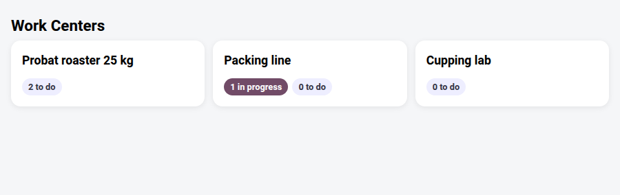
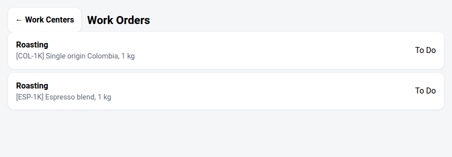
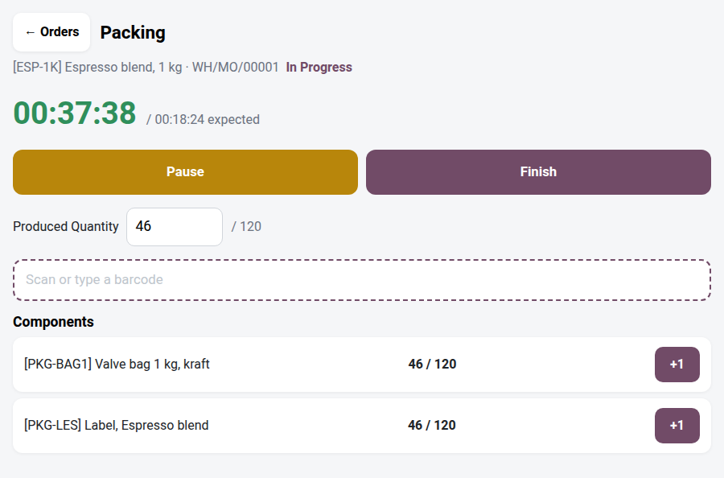
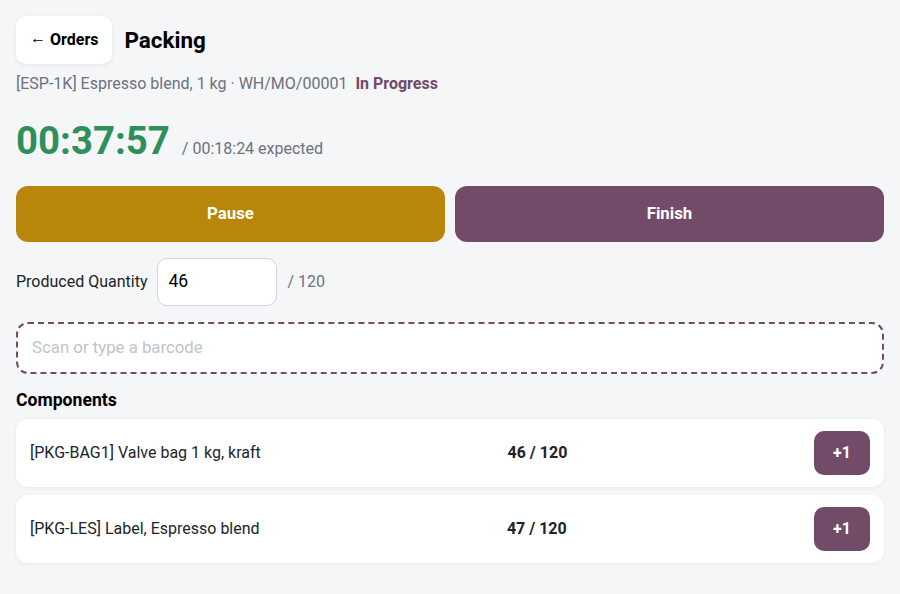

Run your work orders by touch, on a tablet or phone, without ever opening a desktop view — the Shop Floor experience in Community.
On the production line, the operator has neither a mouse nor a large screen: they have a tablet sitting on the work center, sometimes with dirty or gloved hands. Odoo Community's native MRP views are still designed for a desk — dense lists, tiny buttons, no visible timer. The result: work orders started late, untracked stoppages and quantities entered approximately at the end of the day. What is missing is a finger-sized screen, designed to be touched from the work center, not from an office chair.
The operator taps their work center and sees at once what is running and what is waiting.

Only the work orders of this work center, ready to start: the next two roasts.

The timer runs live from the clock-in, next to the expected time; Pause and Finish stay finger-sized, the produced quantity is entered on screen.

One scan of the label roll and its consumption goes from 46 to 47: no line to look for in the bill of materials.

Two extensions enrich these same screens: Shop Floor — Quality Control adds quality control points directly on the current order when the Quality module is installed, and Shop Floor — Barcode adds lot or serial number entry by scan when consuming components.
LGPL-3 license — compatible with Odoo 18.0. Support: apps@odooskills.com.